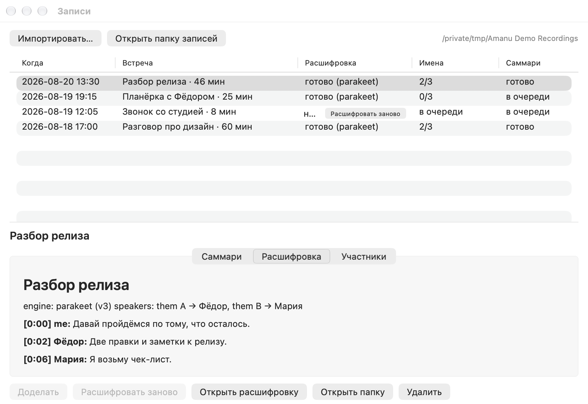

Запускает и останавливает запись автоматически
Записывает и расшифровывает онлайн-встречи. Автоматом
Amanu работает с любыми звонками — Zoom, Google Meet, Телеграм, Вацап. Запускает и останавливает запись автоматически, определяет говорящих и может написать качественную выжимку после встречи.
Скачать для macOS Скачать для Windows
Бесплатно · открытый исходный код · подписан Apple и Microsoft

Диаризация
в расшифровке реплики разложены по людям, а не слиты в один поток.
Качественные выжимки
В других подобных программах создатели экономят токены: на больших масштабах это позволяет заработать ценой качества выжимки.
Я считаю, что модели должны работать по-полной, тем более если у вас уже есть подписка на клод или chatgpt.
Ваша библиотека встреч хранится на компьютере
Одна встреча — одна папка, внутри аудиофайл, расшифровка, выжимка. Обработку тоже можно оставить локальной или подключить выбранную облачную модель.

Всё это — локально
Amanu умеет записывать, расшифровывать и писать выжимки без доступа к интернету, прямо на вашем компьютере.
Или мощнее — по ключу
Хотите — подключите мощные платные модели: Amanu умеет использовать ваши подписки и API-ключи.
Бесплатно и открыто
Amanu полностью бесплатная, у неё открытый исходный код. Установка лёгкая — скачайте и запустите.
Скачать для macOS Скачать для Windows
Требуется macOS 14.2 или новее либо Windows 11 24H2 или новее (x64).